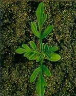

PARLAGFŰ
AMBROSIA ELATIOR L. (AMBEL)
ÉLETFORMA: T4
TERMÉS: Háromféle formájú lehet: egytermésű fészek,
kaszat és csupasz mag. A fészek kehely alakú, peremén 5-7 bütyökkel, a kehelyre
csúcsos fedő borul. Sárgásbarna vagy szürkésbarna, érdes, fénytelen, törékeny,
2,5-4,0 mm hosszú. A kaszat citrom alakú, csúcsán rövid bibecsonkkal. Sötét
olajzöld vagy kávébarna, csaknem sima, gyenge fényű, 1,4-1,6 mm hosszú. A mag tojás
alakú, faggyúszerű. Ezermagtömeg: 2,4-2,6 g. Ősszel a frissen érett magvak
nyugalomban vannak, a nyugalmi állapot 6-12 hét alatt, a tél folyamán megszűnik. A
fény serkenti a csírázást. Magprodukciója igen változó, egy átlagos növény
maghozama 3000 körül van, egyes generatívvá vált egyedek esetében 62 000 termést is
számoltak.
CSÍRANÖVÉNY: Sziklevelei szélesek, elliptikusak,
lekerekedők, levélnyélre keskenyedők, 3-4 mm szélesek. Az első lomblevelek
lándzsásak vagy tojásdadok, hegyes csúcsúak, szárnyasan tagoltak.
KIFEJLETT NÖVÉNY: Egyéves, felálló szárú, 20-150 cm magas, dúsan ágas. Szára
szőrös,tompán négyélű. Levelei egy-kétszeresen szárnyaltan szeldeltek,
bemetszettek, fonákuk és a levélnyél pelyhesen szőrözött. A száron füzérben
álló porzós és levélszáralji termős virágai vannak. A porzós fészkek rövid
kocsányokon ülnek, lecsüngők, szőrösek, 10-15 sárga virággal. A termős fészkek a
felső levelek hónaljában egyesével-kettesével ülnek.
ELTERJEDÉSE: Talajjal szemben nem igényes, elsősorban a
gyengén savanyú, 6,6-7,0 pH-jú, homokos vályogtalajokat kedveli. Magvai tavasszal
akkor csíráznak, ha a talaj felső 5 cm-es rétegének hőmérséklete tartósan 6 °C
főié emelkedik. Igen hatékony kompetitív képességei vannak, ezért rendkívül
káros gyomnövény.
 |